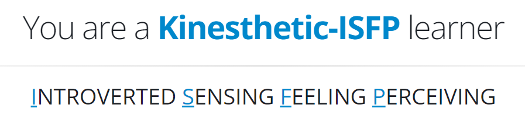

Jihn Nyen Chong

ePortfolio
Student Number: s3994961
E-mail: s3994961@student.rmit.edu.au
Personal Information
I was born in Malaysia but migrated to Perth, Australia at an early age where I started my education. After finishing secondary school, I tried a few courses at university including architecture and engineering but found that they did not hold my interest, so I joined the workforce in various roles in hospitality and currently, in retail. I primarily communicate in English though, I can understand Mandarin and the Hakka dialect well, although unfortunately, my communication with them is very weak. I love nature, wildlife, and photography and so hiking is one of my go-to activities. Other interests also include reading, baking, and cooking.
Interest in IT (Information Technology)
My interest in IT stems from the fascination how technology can improve the quality of life in our daily routines to make things easier and more accessible to people. This started at an early age when my father brought home our first PC (Personal Computer) to improve our education. I fondly remember editing batch files in MS-DOS to be able to load and execute programs in the way I wanted them to work. This was exciting to me as it allowed me to create things on my own and customize things to suit my personal preferences. Since then, my experience in IT has mostly been personal in nature, including building and modifying my own PC as well as setting up and troubleshooting my own devices. Professionally, I briefly worked as a contractor to a large hospital to help in the rollout of new hardware to update older systems.
Several factors led to my choice to enroll at RMIT (Royal Melbourne Institute of Technology). Firstly, I am currently working full-time and the flexibility of being able to learn online allows me to further my education while still being employed. Secondly, from my personal research, RMIT is a well reputed education institution that prides itself in producing individuals who have the knowledge and expertise to be ready in the workplace. Also, comparing the units offered in the same degree to other universities, I found the course RMIT offered to be more practical and well rounded.
I expect to learn a great deal of things in my journey at RMIT. On the practical side, I hope to learn about programming in a few languages as well as networking and other areas in computing technology. On the theoretical side, I expect to expand my understanding of what IT can do and contribute to the world and how that, other than the technological aspect of IT, the human element and its interactions is an important part of the equation. Through the combination of practical skills and theory, this would give me a better view on how to best balance technology and its relationship with people.
Ideal Job
Azure Cloud Architect Job in Melbourne VIC - SEEK
A cloud architect is a professional in the IT industry that deals with the cloud computing strategy of a business. This can be either maintaining the current cloud infrastructure or even adopting and creating an entirely new cloud solution. It requires knowledge of many things including operating systems, security, and networking, among others. This role appeals to me as I believe I would enjoy understanding and working with many components which come together to work together and the optimisation of it to work seamlessly as one system.
There is a myriad of skills required to become a successful Cloud Architect. This includes leadership and communication, adaptability, and good problem-solving skills. Many technical skills are also necessary to be proficient such as virtualisation, security, operating systems, networking, and programming languages. The knowledge of all these skills helps the architect create a solution which can work cohesively to the needs of the business. Certain qualifications may also be helpful and/or necessary for the role. This may include a Bachelor of IT or Computer Science or similar. Industry-specific certifications such as Microsoft Azure certifications may also be needed.
Currently, I believe I have the communication and leadership skills required from my experience in the workforce, as well as the adaptability and flexibility that the role requires. As I have worked in both the hospitality and retail industries, the fast paced and ever-changing environment, and schedules, have taught me to be both adaptable and accommodating. Being in a supervisory role has also given me experience in people management and conflict resolution. However, to be proficient in this role, I am severely lacking in technical knowledge and understanding.
To prepare myself for this position, I will continue to study at RMIT and complete my Bachelor of IT. Along the way, I should also try to gain an entry level position in the field of IT to gather experience working in that field. As I gain more experience, I will strive to learn more and increase my knowledge in other roles and positions such as networking. This knowledge will be gained as I continue my course but also, I may seek to obtain industry recognised certifications such as CompTIA or Cisco certifications. As I gain more understanding in more aspects of the IT field, I can then start exploring cloud computing through Microsoft Azure certifications.
Personal Profile
Myers Briggs Type Indicator
Results and Interactions in a Team Environment
The result of this test defines me as an Advocate personality type (INFJ-A). Advocates are idealistic and value integrity highly and always seek to make the world a better place. Their strengths lie in being principled and passionate but on the flipside, they can be perfectionistic and so be more prone to burnout. Advocates also find it hard to seek help with their struggles and this may lead to a straining of relationships at times.
Advocates should do well in a team environment as they like to help others and see that they succeed. Unfortunately, due to their nature that they see everyone as equals, they may expect all team members to contribute equally and to the same standards as they do. This may cause problems as understandably; each person has their own strengths and weaknesses and, although they may put in equal effort, their standard of work may not be up to the standard of one who seeks perfection. This may lead to some tension. When forming a team, it would be best for advocates to seek like-minded individuals who also seek to perform well and whose ethics align with theirs. If this is not the case, then the advocate must try to understand that each person has their own unique personality and traits.
Learning Style Quiz
Results and Interactions in a Team Environment
ISFP learners are visual learners and if they feel a connection to the material, they learn it quickly and with passion. They are more practical than theoretical learners and therefore, understand better by putting what they learn into practice and experiencing how they work in real world applications. They tend to cover a large dose of content in a large session rather than spread it out evenly over days and so, they may procrastinate sometimes.
In a team they tend to do well with group study and group work though it may be tough if the material involved does not appeal to them so they must find a way to keep themselves engaged. Also, they may find it difficult to keep up with ideas that are purely theoretical in nature. When forming a team, it would be best to seek out others that are also practical and visual learners to benefit from a similar style of learning. If that is not the case, then when grouped with others of different leaning styles, they must find a way to keep themselves active and engaged.
Big Five Test
Results and Interactions in a Team Environment
The results of this test show that on the extraversion scale, the score is considered low, meaning that they enjoy their personal space rather than be in large crowds. Neuroticism is also low meaning that they do not tend to harbour negative feelings. Openness to experience is high showing that such a person is more imaginative, artistic, and intellectual. Agreeableness is high and as a result, this individual values harmony and having a good relationship with people highly. Conscientiousness is also high as this individual believes that they are well organised, dutiful, and can control their impulses well.
With all these results considered, this person, although fine left to their own devices, can also work well in a group as they are agreeable and open to new and different ideas. However, as they are well organised, they may find it difficult to deal with others that do not share the same framework. In the formation of a group, this needs to be considered and if partners are not as organised or disciplined, effective communication must be in place to make sure that everyone is on the same page.
Project Idea
Overview
My project involves automating certain tasks in a tyre center to increase productivity, efficiency, and limit errors. In doing so, the department will run smoother with all the relevant information compiled together centrally being easily accessible and viewable. Automation is the key to a more efficient workplace as workers can now focus on more important tasks which cannot be automated.
Motivation
My motivation for this project is simple. It applies to my current workplace and through the implementation of innovative technologies, I believe it can contribute to a more effective and efficient department with less errors. Obviously, this is purely from my experiences and understanding of my current workplace so more research must be done to better optimise the project. If successful, this can then be implemented in similar workplaces to improve quality of life.
Description
When a vehicle is driven into the workshop to be worked on, all information of the vehicle must be documented, and photographs are taken to ensure that the vehicle leaves in the same condition it entered in. Currently, this documentation is done on a written job sheet which is then filed away for records. The photographs are stored on a laptop after they are downloaded from a digital camera and these photos have no direct link to the vehicle or jobs and so, if a certain image needs to be viewed, currently, you must search through all the images to find the one in question. Also, there are difficulties when it comes to inventory management where the numbers and types of tyres fitted do not add up to the number of tyres ordered and received. This causes issues when we are unsure if the inventory that we have on the system is physically on hand to be able to make a sale. In such a case, currently a physical search for the item must be made to confirm the item is in stock.
To automate some of these tasks and increase quality of life and efficiency in the workshop, cameras and sensors may be added to every work bay together witch a console to input all the relevant information. The sensors may detect the registration plate of the vehicle and photograph all the desired angles at once and link them to the input information on the console, so all the information is compiled together in one place. The next time a customer has an enquiry regarding their vehicle, it can all be easily searched up in detail to offer better advice. Bar codes may also be put on new tyres that are received and these can be scanned with a scanner linked to the consoles to remove the item from the inventory and add them to the job file to know exactly what tyre and how many were fitted on which vehicle. This would improve the accuracy of the inventory along with making records clearer. All these technologies working together would make record keeping much more efficient and less errors would be made.
Tools and Technologies
There are many tools and technologies which are required to make this project possible to work together seamlessly. These include cameras and sensors as well as software to detect the presence of a vehicle and the registration plate. Consoles to input information using either a touch screen and/or keyboard and software to record and compile the information as well as the images taken into one job file is also necessary. A hand-held Wi-Fi or Bluetooth scanner connected to the connected to the console can be used to scan the tyres to be put on the vehicle for inventory management.
Skills Required
Most of the hardware used in this project is readily available but to make it all work together, software must be developed. The software needs to be able to take and record images and link them to the relevant job file and the software must also be able to use the connected consoles and scanners so all the relevant information can be compiled together on one file. I believe it is very feasible to find people with the skills to write and develop software/s to be able to implement this project.
Outcome
If this project is successful, the workshop will run more efficiently with less errors and records can be compiled with much more clarity. The original problem is solved by being able to integrate all the relevant information in one place instead of spreading it out over various sources. This would make things run more seamlessly and limit mistakes. This project can not only have a positive impact on productivity and efficiency of this workplace but if successful, can be modified and implemented to various other similar workplaces.